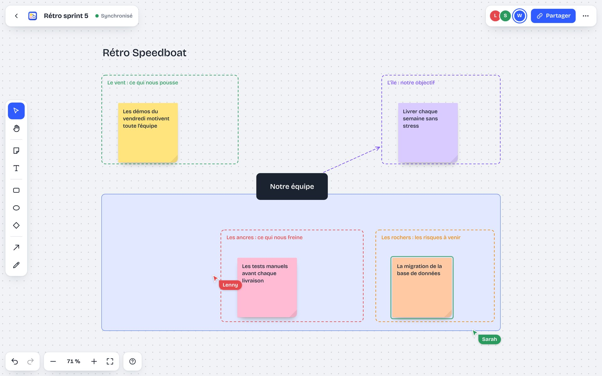

Tout ce qu’il faut pour réfléchir à plusieurs
Post-its, formes, flèches
Sept couleurs de post-its, rectangles, ellipses, losanges, texte libre et crayon. Les flèches s’accrochent aux formes et les suivent.
Tout le monde en direct
Chacun voit les curseurs, les sélections et ce que les autres écrivent, à l’instant où ça arrive.
Des modèles pour démarrer
Rétro Speedboat, Kanban, Brainstorm, schéma d’architecture, ou un board vide.
Tes données restent chez toi
Les boards sont enregistrés sur ton ordinateur, à chaque modification. Tu peux aussi les exporter en JSON.
Partager un board en trois étapes
-
1
Installe Postri
Une seule personne l’installe : c’est son PC qui accueille les boards.
-
2
Clique sur « Partager sur Internet »
Postri ouvre un tunnel sécurisé et te donne un lien public en https. Chaque board a son propre code d’accès.
-
3
Envoie le lien et le code
Tes collègues ouvrent le lien dans leur navigateur, sans rien installer. Il fonctionne tant que Postri est ouvert.
Questions fréquentes
Les invités doivent-ils installer Postri ?
Non. Seule la personne qui héberge l’installe. Les autres ouvrent le lien dans Chrome, Firefox, Edge ou Safari.
Qui peut ouvrir mes boards ?
Seules les personnes qui ont le code d’accès d’un board, et ce code n’ouvre que ce board. Les invités peuvent le modifier, mais pas créer ni supprimer de boards. Tu peux changer le code à tout moment : les invités déjà connectés devront saisir le nouveau.
Que se passe-t-il si j’éteins mon PC ?
Le lien ne répond plus, mais rien n’est perdu : tout est enregistré. Au prochain partage, Postri donne un nouveau lien et un nouveau code.
Est-ce que ça marche sans Internet ?
Oui, sur ton réseau local : les postes connectés au même Wi-Fi rejoignent avec l’adresse locale affichée dans Postri, et le code d’accès du board.
Windows affiche un avertissement à l’installation, c’est normal ?
Oui. Postri n’est pas signé avec un certificat payant, alors Windows SmartScreen demande confirmation. Clique sur « Informations complémentaires », puis sur « Exécuter quand même ».
Comment fonctionne le lien public ?
Postri utilise un tunnel Cloudflare gratuit, sans compte : ton PC se connecte à Cloudflare, qui relaie les visiteurs jusqu’à lui. Aucun port à ouvrir sur ta box.
Lance ton premier board
Installe Postri, choisis un modèle et invite ton équipe.